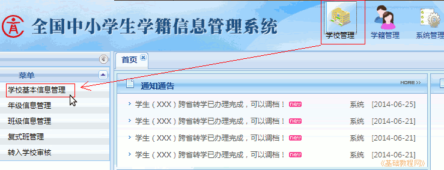
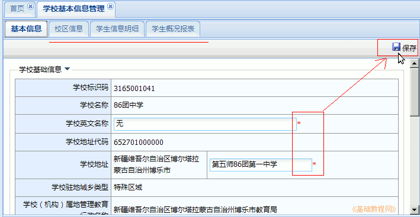
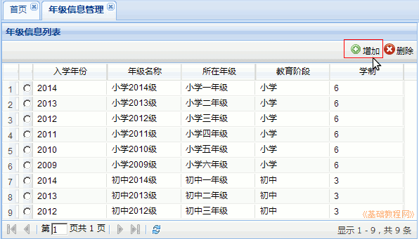
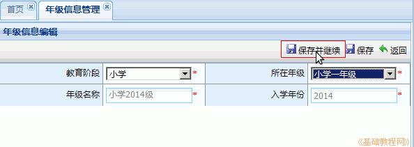
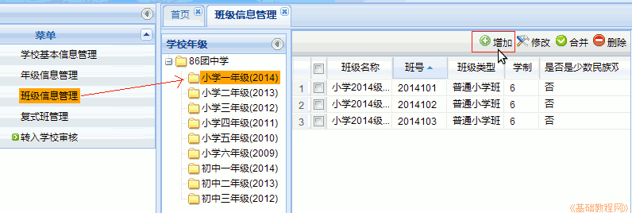
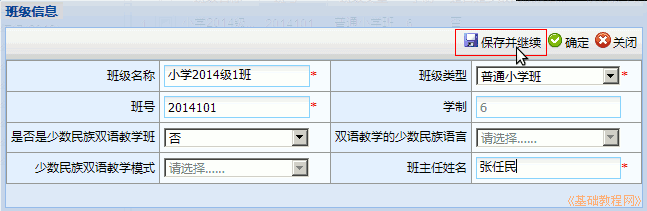

全国中小学生学籍管理系统操作指南
作者：TeliuTe 来源：基础教程网
二、学校管理 返回目录 下一课在学校管理中，设置学校基本信息，联系方式，学年制等；
1、学校管理
1）登录后，点右上角第一个“学校管理”按钮，然后在左侧栏点第一个“学校基本信息管理”链接；

2）在出来的基本信息中，依次填写，后面带红星的必填，没有的填“无”，填完点右上角的“保存”按钮，
中间顶部导航栏的其他标签，像“校区信息、学生信息明细、学生概况报表”，可以点进去看一下；

3）再在左侧栏点第二个链接“年级信息管理”，然后在右边右上角，点“增加”，添加新的年级；

4）在出来的新增年级对话框中，依次选择“教育阶段－所在年级”，然后点“保存并继续”，添加另一个年级，全部保存后点“返回”；

5）再在左侧栏点第三个链接“班级信息管理”，然后在中间找到新增的年级，再在右边右上角，点“增加”，添加新的班级；

6）在出来的新增班级对话框中，会根据年级自动给出班级名称，班号等信息，需要输入班主任姓名，红星必填，
检查无误后，点“保存并继续”，添加另一个班级，全部保存后点“关闭”；

7）记住班号，在新生学籍注册的信息模板中，需要对应填入各班级的班号；
8）左侧栏其他“复式班管理”等，根据学校实际情况设置；
本节学习了学校管理的基础知识，如果你成功地完成了练习，请继续学习下一课内容；
本教程由TeliuTe制作|著作权所有
基础教程网：http://teliute.org/
美丽的校园……
转载和引用本站内容，请保留作者和本站链接。